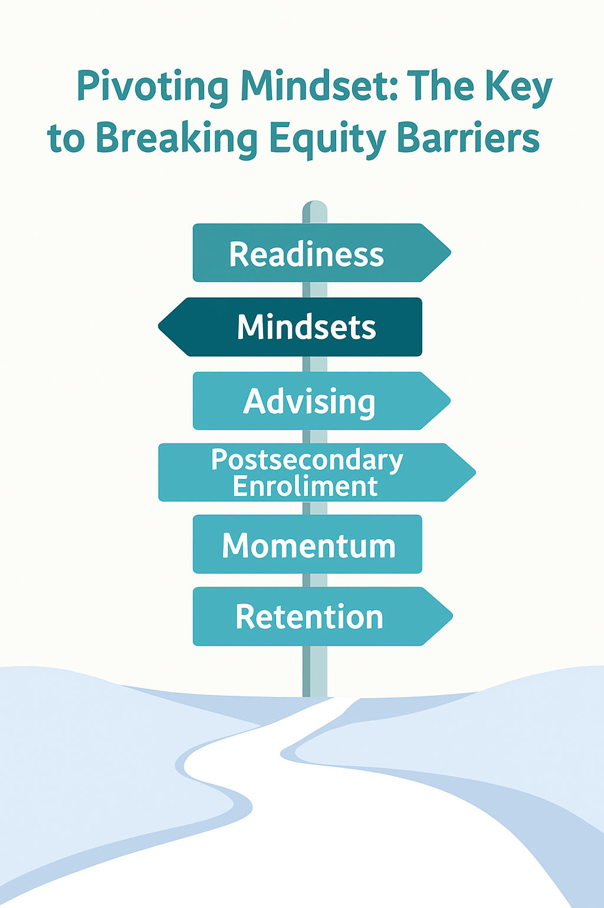

<style>
    .blog-post {
        max-width: 800px;
        margin: 0 auto;
        font-family: "Inter", "Segoe UI", Arial, sans-serif;
        line-height: 1.7;
        color: #333;
    }
    
    .blog-post h1 {
        font-size: 2.4rem;
        margin-top: 1rem;
        color: #003B73;
    }
    
    .blog-post h2 {
        margin-top: 2.2rem;
        color: #003B73;
    }
    
    .blog-post .author {
        color: #777;
        margin-bottom: 2rem;
    }
    
    .hero-image img,
    .section-image img {
        width: 100%;
        border-radius: 8px;
        margin: 1.5rem 0;
    }
    
    blockquote {
        border-left: 4px solid #008C8C;
        padding-left: 1rem;
        color: #003B73;
        font-style: italic;
        margin: 1.5rem 0;
    }
    
    .flow {
        text-align: center;
        color: #008C8C;
        font-size: 1.2rem;
        margin: 1rem 0;
    }
    </style>
    <article class="blog-post">

    <!-- HERO IMAGE -->
    <div class="hero-image">
        
    </div>

    <h1>Pivoting Mindset: The Hidden Key to Breaking Equity Barriers</h1>
    <p class="author">By Annetta “Obi” Oleru</p>

    <p>
        We often talk about postsecondary access through the lens of readiness — GPA, TSIA,
        dual credit participation, attendance, CTE concentrator status, and other quantifiable
        indicators. These are the pieces of data students carry with them, the metrics schools
        report, and the levers policymakers use to define “preparedness.” Yet after analyzing
        district- and student-level data for my EMS performance task, one insight rose above the rest:
    </p>

    <blockquote>
        <strong>Academic readiness alone doesn’t explain why students make different decisions. Mindset does.</strong>
    </blockquote>

    <p>
        Across districts, I saw students with identical readiness profiles follow completely
        different postsecondary pathways. Economically disadvantaged students enrolled at
        lower rates even when their readiness metrics matched their peers. Dual credit students
        showed stronger year-two retention, suggesting early exposure builds belonging and
        identity. And districts with similar TEA indicators produced very different enrollment
        outcomes — a sign that advising culture and student perceptions matter just as much as skill.
    </p>

    <p>These patterns aren’t just anomalies in the dataset. They are signals of something deeper:</p>

    <blockquote>
        <strong>Students act on how prepared they <em>feel</em>, not just how prepared they <em>are</em>.</strong>
    </blockquote>

    <!-- IMAGE 2 -->
    <div class="section-image">
        
    </div>

    <h2>Mindset as a Bridge Between Readiness and Outcomes</h2>

    <p>
        The more I sifted through the data, the more one theme emerged:
        <strong>students’ beliefs fill the gap between readiness and action.</strong>
    </p>

    <p>This is where equity barriers form — not from academic deficits, but from:</p>

    <ul>
        <li>Whether a student feels like they belong on a college campus</li>
        <li>Whether they perceive college as financially impossible</li>
        <li>Whether they can imagine themselves in a future role that requires further education</li>
        <li>Whether anyone in their circle has walked this path before</li>
        <li>Whether they believe that people “like them” succeed in these spaces</li>
    </ul>

    <p>
        These are measurable psychological constructs — and they are powerful predictors of
        real-world outcomes.
    </p>

    <blockquote>
        <strong>Mindsets are the pivot point in the equity equation.</strong>
    </blockquote>

    <!-- IMAGE 3 -->
    <div class="section-image">
        
    </div>

    <h2>Why Pivoting Mindset Is the Key to Equity</h2>

    <p>
        Breaking equity barriers requires more than improving academic preparation.
        It requires <strong>pivoting students’ internal narratives</strong>:
    </p>

    <ul>
        <li>From <em>“College isn’t for people like me”</em> → to → <em>“I belong here.”</em></li>
        <li>From <em>“I don’t know what to do next”</em> → to → <em>“I have a roadmap.”</em></li>
        <li>From <em>“I might fail”</em> → to → <em>“I can persist even when it’s hard.”</em></li>
        <li>From <em>“I can’t afford this”</em> → to → <em>“I have support and options.”</em></li>
    </ul>

    <p>When students shift these beliefs, their behaviors follow:</p>

    <ul>
        <li>Enrollment increases</li>
        <li>Momentum stabilizes</li>
        <li>Retention strengthens</li>
    </ul>

    <p>
        Mindset is not a soft concept —
        it is a <strong>scalable intervention point</strong>.
    </p>

    <!-- IMAGE 4 -->
    <div class="section-image">
        
    </div>

    <h2>What Mindset Data Could Unlock</h2>

    <p>
        If schools and organizations like EMS measured mindset indicators such as:
    </p>

    <ul>
        <li>Self-efficacy</li>
        <li>Sense of belonging</li>
        <li>Future identity</li>
        <li>Perceived barriers</li>
        <li>Social capital</li>
    </ul>

    <p>
        — we could predict who needs targeted advising
        <strong>before</strong> they fall off track.
    </p>

    <blockquote>
        <strong>
            Mindset data transforms advising from reactive to predictive — and from one-size-fits-all to equity-centered.
        </strong>
    </blockquote>

    <!-- FLOWCHART IMAGE -->
    <div class="section-image">
        
    </div>

    <h2>A Mindset-Driven Framework for Postsecondary Success</h2>

    <p>One way I’ve started thinking about this work is through a simple flow:</p>

    <p class="flow">
        <strong>
            Readiness → Mindsets → Advising → Postsecondary Enrollment → Momentum → Retention
        </strong>
    </p>

    <p>
        Readiness describes <em>what</em> students have achieved.  
        Mindset shapes <em>how</em> they interpret those achievements.  
        Advising responds to both the data and the story students tell themselves.  
        From there, enrollment, early momentum (credits, GPA, persistence), and longer-term retention follow.
    </p>

    <p>
        Mindset is the point where equity fractures occur — and the point where equity can be restored.
    </p>

    <!-- IMAGE 6 -->
    <div class="section-image">
        
    </div>

    <h2>Final Reflection: Why This Matters to Me</h2>

    <p>
        As someone who has navigated educational barriers from Oklahoma City to boarding school
        to an MBA program, I’ve lived the truth that:
    </p>

    <blockquote>
        <strong>
            Belief precedes action.<br>
            Identity fuels resilience.<br>
            And mindset opens doors academic metrics alone cannot.
        </strong>
    </blockquote>

    <p>
        This is why I believe the next chapter of educational data work must go beyond measuring
        <em>whether</em> students are ready — and start measuring
        <em>whether they believe they can succeed.</em>
    </p>

    <p>
        When we pivot mindsets, we don’t just improve enrollment statistics.<br>
        We shift trajectories.<br>
        We expand futures.<br>
        We break equity barriers at their roots.<br><br>
        And that is the kind of data-driven storytelling I want to lead.
    </p>
</article>
